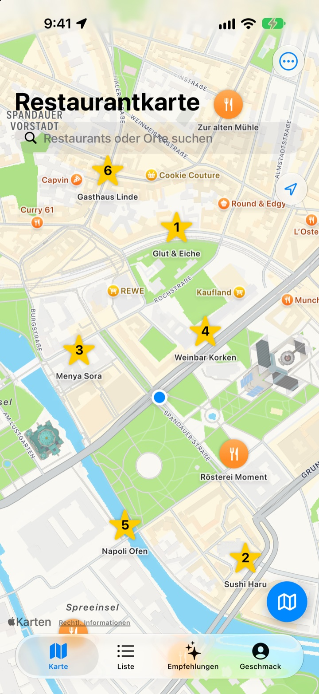
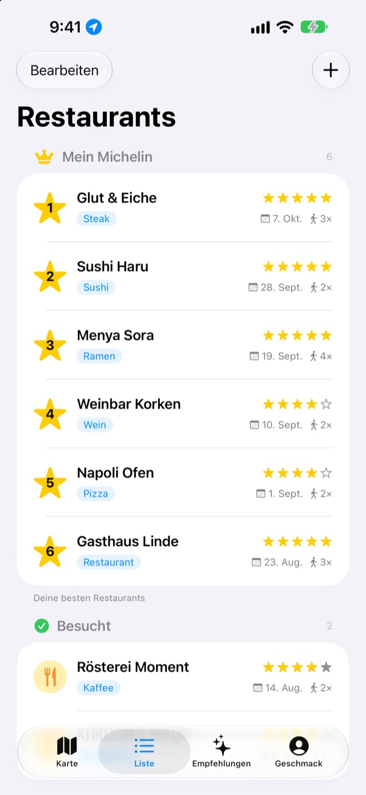
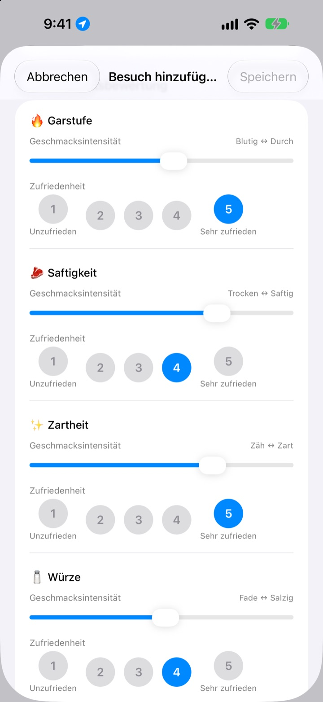
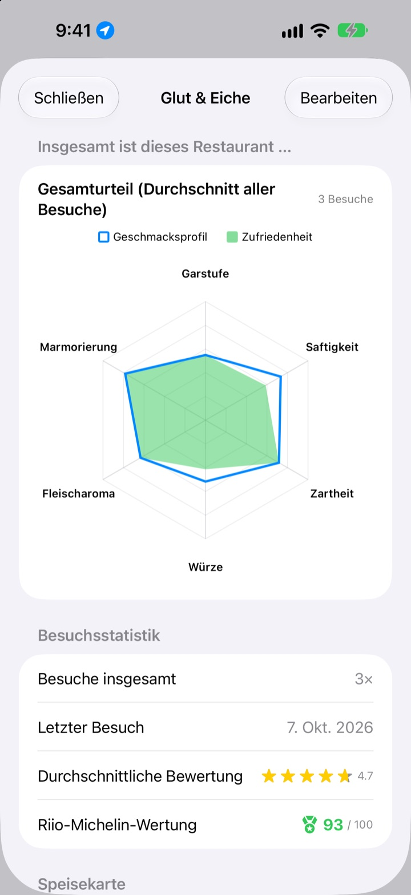

Nie wieder vergessen,
wo es richtig gut war
Markiere Restaurants, in denen du warst und die du ausprobieren willst, und notiere bei jedem Besuch Gericht, Fotos und Geschmack. Wenn du nicht weißt, wo du essen sollst, haben deine eigenen Notizen die Antwort.
Alle Funktionen sind kostenlos. Ohne Anmeldung, alles bleibt auf deinem iPhone.

Bewerte ein Gericht
Wähl eine Küche und stell ein, wie intensiv jeder Geschmack war und wie gut er dir gefallen hat. Dieselben Kriterien und dieselbe Rechnung wie bei einem Besuch in der App.
Das Restaurant war super, aber was hatte ich noch mal?
Du weißt noch, dass es toll war, aber der Name ist verschwommen, und was du bestellt hast oder ob die Brühe zu salzig war, weißt du schon gar nicht mehr. Also suchst du wieder und liest Bewertungen von Fremden. Insaeng hält fest, was du selbst probiert hast, damit du das nächste Restaurant nach deiner eigenen Erfahrung wählst.
Besucht, Möchte ich besuchen und dein eigener Michelin
Such auf der Karte oder tipp auf einen Ort in der Nähe, schon ist er gespeichert. Trenne Lokale, in denen du warst, von denen, die du ausprobieren willst, und gib deinen sechs Lieblingen Platz 1 bis 6.
Fragt dich jemand nach einem Tipp, zeig einfach die Liste.

Fragen, die zum Gericht passen
Wie intensiv ein Geschmack war, etwa Schärfe oder Salz, stellst du per Schieberegler ein, wie gut er dir gefallen hat, bewertest du getrennt von 1 bis 5. Beim Steak geht es um Garstufe und Saftigkeit, bei Sushi um Reis und Fisch, bei Ramen um Brühe und Nudeln.
Jeder Besuch speichert außerdem Gericht, Fotos, Sterne und Notizen.

Wohin es sich zurückzugehen lohnt, siehst du in Zahlen
Mit mehreren Besuchen zeigt jedes Restaurant ein Gesamturteil aus dem Durchschnitt aller Besuche und eine Riio-Michelin-Wertung bis 100, die Sterne und Zufriedenheit verbindet.
Verlässt du ein gespeichertes Restaurant, erinnert dich kurz danach eine Mitteilung ans Eintragen.

In drei Schritten loslegen
- 1
Restaurant speichern
Auf der Karte suchen oder einen Ort in der Nähe antippen.
- 2
Besuch eintragen
Gericht, Fotos, Sterne und Geschmack. Die Geschmacksbewertung ist freiwillig.
- 3
Das nächste wählen
Top 6 und Wertungen ansehen, dann mit Apple Karten, Kakao Map oder Naver Map hin.
Was je nach Gericht bewertet wird
- 🍽️ Allgemein
- Schärfe, Intensität, Süße, Salzigkeit, Fettigkeit, Eigengeschmack
- 🥩 Steak
- Garstufe, Saftigkeit, Zartheit, Würze, Fleischaroma, Marmorierung
- 🍣 Sushi
- Shari (Reis), Neta (Belag), Wasabi, Balance, Formung, Temperatur
- 🍜 Ramen
- Brühe, Nudeln, Chashu, Belag, Temperatur, Balance
- 🍕 Pizza
- Teig, Sauce, Käse, Garstufe, Belag, Balance
- 🍷 Wein
- Körper, Tannin, Säure, Aroma, Abgang, Balance
- ☕ Kaffee
- Säure, Körper, Aroma, Nachgeschmack, Süße, Balance
Alles andere bewertest du mit den allgemeinen Kriterien aus der ersten Zeile. Eigene Kategorien kannst du auch anlegen.
Häufige Fragen
Wie füge ich ein Restaurant hinzu?
Gib den Namen des Restaurants in das Suchfeld oben auf der Karte ein und tippe im Ergebnis auf „Zu meinen Restaurants hinzufügen“. Du kannst auch direkt auf einen Ort in der Nähe tippen, der auf der Karte angezeigt wird. Lokale, die die Suche nicht findet, legst du einfach an deinem aktuellen Standort oder an einem Punkt auf der Karte selbst an.
Was bedeuten „Besucht“, „Möchte ich besuchen“ und Top 6?
Besucht – Restaurants, in denen du schon warst. Hier kannst du Besuche eintragen. Möchte ich besuchen – Restaurants, die du irgendwann ausprobieren willst. Warst du dort, stelle das Lokal in seiner Detailansicht auf „Besucht“ um. Top 6 (Mein Michelin) – Deine sechs liebsten Restaurants, sortiert von Platz 1 bis Platz 6. Restaurants auf der Wunschliste können nicht in die Top 6 aufgenommen werden.
Muss ich den Geschmack bewerten?
Nein, das ist freiwillig. Wenn du bewertest, fließen Geschmacksprofil und Zufriedenheit ins Gesamturteil des Restaurants ein und zählen für die Riio-Michelin-Wertung.
Wann kommt die Mitteilung „Wie war dein Besuch heute?“
Wenn du dich länger als 5 Minuten in der Nähe eines gespeicherten Restaurants aufhältst und dann gehst, kommt die Mitteilung etwa 40 Minuten später. Dafür brauchst du die Standortberechtigung „Immer“ und erlaubte Mitteilungen. Wenn du keine solchen Mitteilungen möchtest, schalte unter Einstellungen > Apps > Insaeng die Mitteilungen aus oder stelle den Standortzugriff auf „Beim Verwenden der App“. Die Standortprüfung findet nur auf dem Gerät statt; Bewegungsverläufe werden weder gespeichert noch nach außen übermittelt.
Funktioniert die App auch ohne Standortberechtigung?
Ja. Du kannst einen Ort auf der Karte selbst auswählen, um Restaurants hinzuzufügen und Besuche einzutragen. Nur die Anzeige deines aktuellen Standorts und die Erinnerung nach dem Besuch stehen dann nicht zur Verfügung.
Die Ortssuche findet nichts
Für die Ortssuche ist eine Internetverbindung nötig. Versuche es mit einem anderen Namen oder einem kürzeren Suchbegriff. Wenn das Lokal immer noch nicht auftaucht, wähle einen Punkt auf der Karte und lege es selbst an.
Wo werden meine Einträge gespeichert? Werden sie mit anderen Geräten synchronisiert?
Restaurants, Besuchsprotokolle und Fotos werden ausschließlich auf diesem iPhone gespeichert. Die aktuelle Version unterstützt keine Synchronisierung mit anderen Geräten, und auch iCloud-Backup und -Wiederherstellung in den Einstellungen funktionieren noch nicht. In einer vollständigen Sicherung deines iPhone (iCloud-Backup oder Sicherung auf dem Computer) sind die App-Daten enthalten.
Ich möchte alle Einträge löschen
Tippe in den Einstellungen auf dem Kartenbildschirm auf „Alle Daten löschen“, um Restaurants und Besuchsprotokolle zu entfernen. Das lässt sich nicht rückgängig machen. Um auch alle Fotos restlos zu entfernen, lösche die App.
Bleiben meine Einträge erhalten, wenn ich die App lösche und neu installiere?
Nein. Da die Einträge nur auf dem Gerät gespeichert sind, werden sie zusammen mit der App gelöscht. Bitte denk daran, bevor du die App entfernst.
Ist wirklich alles kostenlos?
Ja. Alle Funktionen sind kostenlos, ohne Werbung und ohne Konto. „Entwickler unterstützen“ in den Einstellungen ist freiwillig und schaltet nichts frei.
Findest du hier keine Antwort, schreib uns direkt in der App unter Einstellungen > Support oder per E-Mail an mizzking75@gmail.com. Wenn du App-Version, iPhone-Modell und eine kurze Beschreibung angibst, auf welchem Bildschirm du was gemacht hast, können wir schneller helfen.